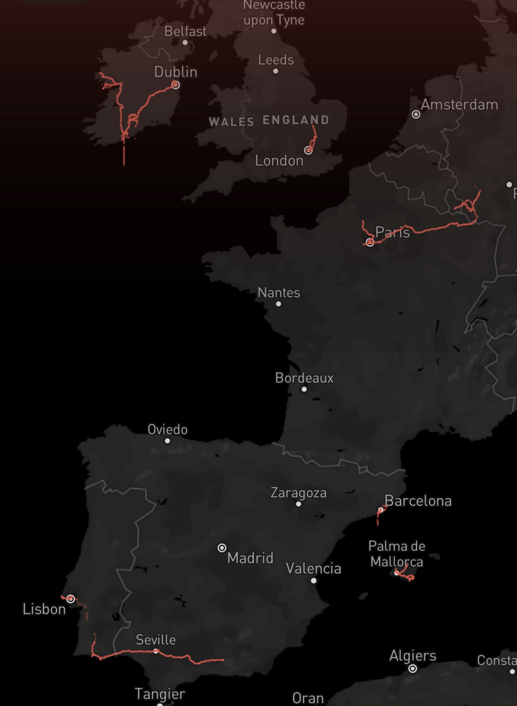
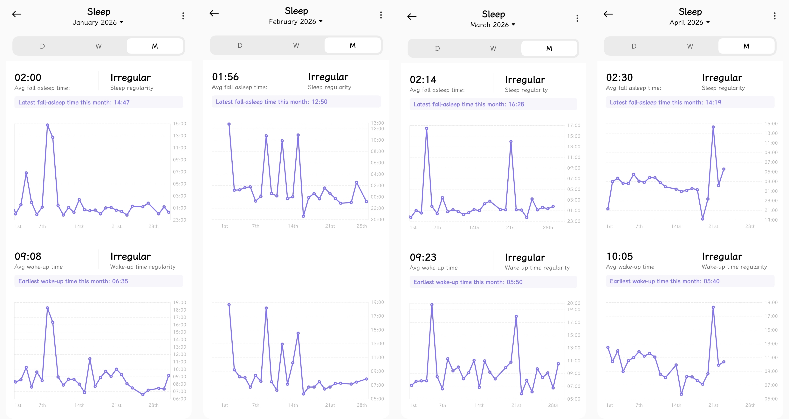

Introduction
I’ve always been keeping track of my personal data, such as location, sleep time, steps, device screen time, film watching records, and diaries when time permits. The idea of the “quantified self” suggests that by systematically tracking personal data, individuals can gain insight into their daily behaviours and underlying patterns. In this project, I focus on my own sleep habits over a period of 100 days. Rather than simply measuring sleep duration, I aim to explore how my sleep schedule varies across different contexts and how it reflects the tension between my intended routines and actual behaviour.
This project is guided by three main questions:
- What kind of pattern does my sleep habit show?
- How do different living contexts (home vs travel) affect my sleep patterns?
- What aspects influence sleep quality the most?

Data Collection
The dataset was collected using a wearable device alongside a small amount of manual recording. Each entry corresponds to one day and includes variables such as sleep time, wake-up time, total sleep duration, interruptions, and contextual labels (e.g., “home” or “travel”). The data spans over 100 days, from 10 January to 20 April 2026, providing a longitudinal view of my sleep behaviour.

However, the dataset is not without limitations. There is one instance of missing data due to not wearing the device overnight. It serves no purpose to retain the empty data in this project, so I simply excluded this entry.

Additionally, the sensor occasionally produced inaccurate readings, for example, detecting sleep when I was inactive but still awake, likely due to low movement in bed and low heart rate. Thankfully I can recognize most of these errors and correct them, because the wrong data will seem weird and cannot be explained. So, I checked my diaries and phone albums to make sure nothing special happened that night to cause the irregularity, and fixed them to what I reckon as reasonable data. These issues are important to acknowledge, as they affect the reliability of the analysis.
📈 Overview
📊 General Result
The first visualisation presents the dataset as a timeline. This format preserves the granular integrity of the data, allowing for direct observation of daily shifts.
The most obvious feature of my sleeping habit is the late bedtime and general irregularity. I usually go to sleep after 1am and often it can be after 3 am, which is far from a stable habit. The data honestly captures my "floating" schedule where sleep onset is frequently delayed until the 2:00 AM to 4:00 AM window, effectively shifting my entire circadian sleep phase into the late-night hours.
Ideal vs Reality: The Unmet Sleep Window
Look at the gray area underneath. One of the most striking aspects of this graph is probably the gap between my intended and actual behaviour. Throughout the dataset, I defined an “ideal” sleep window from 23:00 to 07:00, representing what I consider a healthy and desirable routine.
However, the data shows that I never consistently followed this schedule. In fact, my actual sleep times rarely align with this window at all. This reveals a persistent disconnect between intention and practice.
What makes this particularly interesting is that the ideal standard still exists cognitively. I continue to regard it as the “correct” routine, despite repeatedly failing to achieve it. This suggests that knowledge alone is insufficient to shape behaviour; structural conditions and daily contexts appear to have a stronger influence.
To better understand these irregularities, I divided the data into two categories: “home” and “travel”, marked by blue and pink, which reveals how environmental instability prevents the formation of a consistent rhythm.
Social science often identifies this as "social jetlag," but in my case, the irregularity persists even during the "Home Routine" periods. The blue bars do not return to the target window or my previous habit after a period of travel; instead, they often inherit the delayed timing of the irregular periods. This suggests a lack of a "morning anchor", like a fixed social or professional commitment that mandates an early wake-up time.
Without this anchor, my sleep cycle exhibits a significant "phase delay," where the end of the sleep bar gradually creeps toward noon or even early afternoon, particularly visible in the data from late March into April.
This pattern of "behavioral drift" is most evident in the way my sleep duration remains relatively consistent even as the timing shifts. I am not necessarily sleeping less; I am sleeping later. The bars move across the axis as a unit, indicating that my body still demands a full sleep cycle, but it is taking that cycle whenever the environment allows, rather than within a disciplined window.
The scattered nature of the wake-up times—ranging from 8:00 AM to nearly 2:00 PM—highlights a highly reactive sleep pattern. Rather than a proactive schedule dictated by a clock, my rest is dictated by a cycle of late-night productivity or leisure followed by compensatory sleep. This overview ultimately documents a lifestyle that prioritizes nocturnal activity, where the traditional boundaries of "day" and "night" have become fluid and secondary to the immediate demands or habits of the moment.
📈 Sleep & Wake Density
Temporal Distribution: Visualising Regularity
To further examine regularity, I constructed circular “clock-like” visualisations alongside binned bar charts to represent the distribution of sleep and wake-up times under different conditions. Rather than plotting each exact timestamp, I grouped time into 15-minute intervals (i.e., four segments per hour). This aggregation reduces visual fragmentation while still preserving temporal resolution.
Each day contributes equally as one observation, but after grouping, the frequency within each interval varies. Furthermore, to ensure comparability between “home” and “travel” periods, given their unequal number of days, all values were normalised into percentages, so that bar length reflects proportional distribution rather than raw counts.
Focusing first on sleep onset time, the contrast between the two conditions is immediately visible. Under the “home” condition, sleep times are highly dispersed, spanning roughly from midnight to 4:00 AM, with no strong clustering. This wide spread suggests a lack of consistent routine, with substantial day-to-day variability. In contrast, during travel, sleep times become noticeably more concentrated, primarily between 12:00 AM and 2:00 AM. Although still relatively late, this narrower range indicates a more regularised pattern.
One notable feature is that in both conditions, the most frequent sleep onset occurs around 1:15 AM. This interval accounts for approximately 15% of days at home and nearly 20% during travel. This consistency suggests a behavioural threshold: around 1:00 AM, I tend to recognise that it is “late enough” to initiate sleep. Based on long-term observation, there is typically a delay of around 10–15 minutes between the decision to sleep (e.g., putting the phone away and turning off the lights) and the moment when the wearable device records sleep onset. While this recorded time does not necessarily correspond to deep sleep, it marks the point at which I lose conscious awareness, which aligns reasonably well with subjective experience.
Despite the overall regularity during travel, several outliers appear as extremely late sleep times. Upon revisiting the raw data, these instances can be attributed to specific situational constraints, particularly late-night travel. For example, on days involving late arrivals at Dublin Airport, I often landed around 1:00 AM and had to remain in the airport overnight before catching early-morning transport back to Cork. In such cases, actual rest was delayed until 2:30–4:00 AM. In another instance, a recorded sleep time of 5:30 AM resulted from fragmented rest the previous night that was not captured by the wearable device, likely due to shallow or interrupted sleep. These anomalies highlight both the influence of contextual factors and the limitations of device-based sleep tracking, and could also be discussed as part of data error or measurement bias.
In contrast, irregularity at home is not driven by external constraints but by internal variability. In addition to frequent late nights, there are occasional instances of unusually early sleep (e.g., 8:00–9:00 PM), typically following periods of accumulated sleep deprivation or physical fatigue (such as illness). These extremes further contribute to the overall dispersion of the distribution.
Turning to wake-up times, the difference between the two conditions becomes even more pronounced. At home, wake-up times range widely from approximately 7:00 AM to 12:00 PM, with the highest density occurring around 8:00–9:00 AM. This pattern is partially shaped by external factors such as alarms set for early-morning commitments (e.g., coordinating with collaborators in China across time zones), but these constraints are inconsistent. As a result, wake-up times remain flexible and often delayed, with many days extending into late morning.
By contrast, during travel, wake-up times are both earlier and more tightly clustered. The most frequent intervals fall between 7:00 and 8:00 AM, accounting for roughly one-third of all travel days. This reflects a clear behavioural shift: travel introduces a strong external anchor, such as planned activities, limited time at each destination, and a motivation to maximise daytime exploration, which encourages earlier rising.
An additional asymmetry emerges at the lower bound of wake-up times. Under the home condition, there are no recorded instances of waking before 6:30 AM, with the earliest at 6:45 AM. However, during travel, approximately one-third of days involve waking before 7:00 AM. These early wake-ups are often associated with insufficient sleep, particularly in cases of disrupted or shortened rest due to transport schedules. In fact, a subset of travel days shows sleep durations concentrated between approximately 3:00 AM and 7:00 AM, indicating severely restricted rest.
This pattern suggests that while travel introduces structure, it also pushes behaviour toward extremes. On the one hand, it stabilises daily rhythms through external scheduling and motivation; on the other hand, it creates conditions, especially around transit, that lead to highly irregular and sometimes physically taxing sleep patterns. The consequences of this trade-off are not negligible. For instance, following an intensive travel period, I experienced acute physical fatigue and illness, including fever and prolonged recovery sleep (up to 14 hours), indicating that accumulated sleep debt and disruption can have immediate physiological effects.
📈 Sleep Quality
What leads to a good or poor sleep?
To further enrich the analysis, I introduced an additional interactive visualisation in which sleep quality is explicitly highlighted through colour coding: “good” days are marked in blue, “poor” days in red, while “fair” days remain in grey. I also implemented three sorting modes, by sleep onset time, wake-up time, and total sleep duration, to allow for comparative observation across different temporal dimensions. Across these views, no strict or deterministic relationship emerges between sleep quality and either bedtime or wake-up time. Both “good” and “poor” nights appear distributed across a wide temporal range, suggesting that simply sleeping earlier or later does not guarantee better outcomes.
That said, a weak tendency can still be observed: “good” quality sleep more often occurs when sleep begins before approximately 1:00 a.m., with wake-up times generally falling after 7:00 a.m. It is worth noting, however, that this observation is contingent on my current baseline as a chronic night owl. This "1:00 a.m. threshold" likely represents a relative improvement within an irregular routine rather than an absolute ideal; should I successfully shift my entire schedule earlier, the window for optimal rest would likely advance in tandem.
Nevertheless, the most noticeable pattern appears when sorting by total duration. “Poor” quality sleep clusters at both extremes: on nights with very short sleep as well as those with unusually long durations. This indicates that insufficient sleep is not the only issue; excessive sleep may also be associated with lower perceived quality.
While existing research suggests that sleep quality is shaped by multiple interacting factors beyond timing and duration, my own data points to duration as a particularly influential variable. At the same time, subjective experience complicates this pattern: even when total sleep is long, going to bed very late often results in persistent fatigue the next day. In this sense, although the visual patterns do not show a strong dependency on clock time alone, the lived experience of recovery still appears to be sensitive to when sleep occurs, not just how long it lasts.
Conclusion
This project began with an intuitive awareness that my sleep habits were irregular and often unhealthy. However, visualising the data transformed this vague perception into something far more concrete. What is striking is not simply that my sleep is inconsistent, but the extent of that inconsistency. Rather than clustering within a relatively narrow time window, my sleep onset spans a large portion of the 24-hour cycle. This is not just a pattern of “late sleeping,” but a near absence of a stable temporal structure.
More importantly, these findings suggest that sleep behaviour cannot be understood purely as a matter of individual choice or discipline. The contrast between home and travel conditions shows that regularity does not emerge naturally from intention, but from external constraints and structured environments. In other words, knowing that I “should sleep earlier” does not, in itself, translate into behavioural change.
This observation is consistent with existing research. For instance, Taub and Berger (1976) demonstrate that disruptions to the 24-hour sleep–wake cycle impair human performance largely independently of total sleep duration. In my case, even when total sleep time is occasionally sufficient, irregular timing may still undermine daily functioning.
At the same time, the data complicates a purely duration-based understanding of sleep. Longer sleep does not necessarily correspond to better perceived quality, while shorter but more regular sleep sometimes produces more stable daily rhythms. This helps explain a familiar but frustrating experience: even after “catching up” on sleep, I do not necessarily feel better. As Czeisler (2014) argues, sleep timing, duration, and quality are all essential for health and performance. Taken together, this suggests that regularity and alignment with circadian rhythms may be as important as, if not more important than, total hours slept.
From a behavioural perspective, the data also reveals a reinforcing cycle. The absence of a structured daytime routine makes it easier for nights to extend unpredictably, even when I am already exhausted. This, in turn, disrupts the following day, making it harder to establish any consistent routine. In this sense, what appears as “flexibility” does not result in freedom, but in drift. By contrast, the external rhythms imposed during travel act as temporal anchors, promoting greater consistency. This suggests that a certain degree of external constraint may not be restrictive, but stabilising.
However, it is also necessary to acknowledge the limitations of the dataset. Missing data reduces completeness, and device-based measurements introduce potential inaccuracies—for example, periods of inactivity may be misclassified as sleep. More fundamentally, quantified self data inevitably strips away human context. It records when I slept, but ignores why I stayed awake, what I was doing, or how I felt at the time. As a result, while the visualisations reveal clear patterns, they do not constitute a complete representation of reality and must be interpreted critically.
Ultimately, this project demonstrates the value of a digital humanities approach to everyday life. By combining personal data, visualisation, and interpretive reflection, it becomes possible to connect subjective experience with empirical patterns. In this context, sleep is not only a biological necessity, but also a lens through which to understand the relationship between individual behaviour and external structure. What this project reveals is not just when I sleep, but how easily intention gives way to habit, and how, in the absence of structure, that habit can become difficult to control.
References
- Czeisler, Charles A. 2014. "Duration, Timing and Quality of Sleep Are Each Vital for Health, Performance and Safety." Sleep Health 1 (1): 5–8. https://doi.org/10.1016/j.sleh.2014.12.008.
- Taub, J.M. and Berger, R.J. (1976) 'The effects of changing the phase and duration of sleep'. Journal of Experimental Psychology: Human Perception and Performance, 2(1), p. 30. Available at: https://psycnet.apa.org/record/1976-08713-001 (Accessed: 21 April 2026).